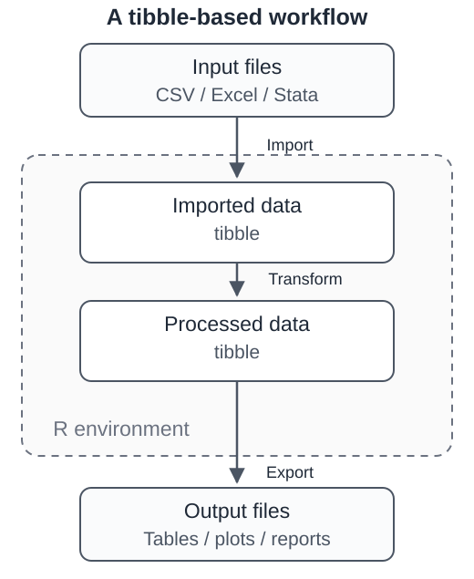

getwd()[1] "D:/Agent/R4SS/en"file.exists("examples/lifeexp-excerpt.dta")[1] TRUEfile.exists("examples/lifeexp-excerpt.sav")[1] TRUEThis chapter opens Manage datasets. After exploring tables and working with individual variables, we consider how to bring files into R, preserve their metadata, and save checked results. You can return here whenever a project supplies a different format.
The first download and CSV import in Section 7.7 introduced the route from a file to a table, and Section 7.8 saved a separate copy. This chapter extends that workflow to different formats, metadata, and sources. Return here when an unfamiliar file, a label, or a conversion requires more than the basic reader.
By the end of this chapter, you will be able to:
We reuse selection, conversion, missing-value checks, and column inspection from earlier chapters. All examples use the historical country data, with two six-country format excerpts and the complete package dataset. This chapter needs three files in examples: lifeexp-excerpt.dta, lifeexp-excerpt.sav, and lifeexp.csv. No GSS file is required.
So far, packaged data and a saved survey extract have supplied our tables. When a research archive supplies a file, we need to bring it into R and check what the format preserves.
My view is that learning to work comfortably with tibbles is enough to carry out most data analysis.

Files on disk and objects inside R are different things. For many tabular analyses, we can organize the work in three steps, which connect the earlier table operations to files on disk:
Imagine receiving a household survey from a research archive. The archive is the source, the downloaded Stata file is the format, and the tibble you import is an R object in your current session. Changing the format does not, by itself, change whom the survey represents or what its questions mean. A codebook describes the variables, their values, and important details of data collection. Keep it with the data: importing a file successfully does not tell you how to interpret its contents.
The same survey may be offered in several formats. Choose among those supplied by the producer before converting anything yourself: a labelled statistical file may carry information that a plain-text copy leaves to a separate codebook. Use Table 18.1 as a reference when you receive a file, rather than as a list to memorize. Functions without a prefix come from base R or from readr, readxl, and haven, which are installed with the tidyverse; a function written as package::function() comes from a package you may need to install first.
| Format | Read with | Check |
|---|---|---|
Plain text.csv, .tsv, .txt |
read_csv(), read_tsv() |
Identifiers such as 00123; dates such as 03/04/2025; guessed column types |
Excel.xlsx, .xls |
read_excel() |
Title rows, merged cells, several tables on one sheet |
Stata / SPSS / SAS.dta, .sav, .sas7bdat |
read_dta(), read_sav(), read_sas() |
Value labels; codes such as “Refused” and “Not asked”; SAS labels in a separate catalog |
R data.rds, .RData, .rda |
read_rds(), load() |
Objects other than tables; R or package versions |
Binary tables.parquet, .feather, .ftr |
arrow::read_parquet(), arrow::read_feather() |
Which types, labels, and documentation survived conversion |
Nested and web.json, .xml, .html |
jsonlite::fromJSON(), xml2::read_xml(), rvest::read_html() |
Nested records or page content to rearrange into a table |
Spatial.shp and its companion files, GeoTIFF .tif |
sf::read_sf(), terra::rast() |
A shapefile is a set of files; keep shapes with their attributes |
Archives.zip, .gz, .bz2, .xz |
unzip(); read_csv() also reads .csv.gz |
Containers: find the data files and documentation inside |
| Databases and APIs (no file) |
DBI::dbGetQuery(), httr2::request() |
Ways of obtaining data, not formats; results are often JSON or tables |
Uninformative.dat, .bin |
Depends on the producer | Consult the producer’s instructions |
Data can also come from inside R: datasets included with R and its packages, or values typed directly into code, as in the named-country example in Introduction to R. Folders can hold several data files at once. Text, images, and recordings may require other tools before they yield the variables needed for a particular analysis. These lists are not exhaustive. A small file is not necessarily a simple dataset.
R reads these formats with short commands. The examples below use two small files containing the same six countries: lifeexp-excerpt.dta and lifeexp-excerpt.sav. The haven package, installed with the tidyverse, reads both. In the printed tibble, the header gives rows first and columns second: 6 × 6 means six countries and six variables. Numbers at the left mark row positions, not respondent IDs. Under each column name, a cue such as <dbl> identifies its type; <dbl> means a numeric column stored as doubles:
Before running the import, open the r4ss project folder you created in Section 1.1.1 and check it with getwd(). Inside it, create a subfolder named examples using your file manager or editor. Download both linked files and move them into that subfolder, keeping their exact names. A browser may initially save them in Downloads; clicking the links alone does not place them in examples.
The relative path "examples/lifeexp-excerpt.dta" tells R to start in its working directory, enter examples, and read lifeexp-excerpt.dta. The same convention applies to the SPSS file. To check the locations before importing, file.exists() returns TRUE for each file R can find:
getwd()[1] "D:/Agent/R4SS/en"file.exists("examples/lifeexp-excerpt.dta")[1] TRUEfile.exists("examples/lifeexp-excerpt.sav")[1] TRUEBoth checks should return TRUE. If one is FALSE, check the directory, subfolder, and exact filename, including a possible extra suffix added by your browser. Keep the original downloads unchanged. Save the import commands in a script in r4ss so that you can repeat them in a new session.
Load tidyverse for table operations and haven for labelled statistical files. read_dta() takes the Stata file path and returns a tibble. Assign it to a distinct object so that importing another format will not overwrite it:
library(tidyverse)
library(haven)
countries_stata <- read_dta("examples/lifeexp-excerpt.dta")
countries_stata# A tibble: 6 × 6
region country popgrowth lexp gnppc safewater
<dbl+lbl> <chr> <dbl> <dbl> <dbl> <dbl>
1 1 [Europe & C. Asia] Albania -0.6 74 870 49
2 1 [Europe & C. Asia] Poland 0 73 4390 NA
3 2 [North America] Canada 0.8 79 20900 99
4 2 [North America] Cuba 0.3 75 2240 NA
5 3 [South America] Argentina 1.2 73 7960 NA
6 3 [South America] Brazil 1.5 69 4980 76
The result has six rows and six columns. read_sav() takes an SPSS file path and also returns a tibble. Keep it separately so that the two imported excerpts remain available:
countries_spss <- read_sav("examples/lifeexp-excerpt.sav")
countries_spss# A tibble: 6 × 6
region country popgrowth lexp gnppc safewater
<dbl+lbl> <chr> <dbl> <dbl> <dbl> <dbl>
1 1 [Europe & C. Asia] Albania -0.6 74 870 49
2 1 [Europe & C. Asia] Poland 0 73 4390 NA
3 2 [North America] Canada 0.8 79 20900 99
4 2 [North America] Cuba 0.3 75 2240 NA
5 3 [South America] Argentina 1.2 73 7960 NA
6 3 [South America] Brazil 1.5 69 4980 76
The same six countries appear in the same order. Neither reading function changes its file on disk. Printed equality is a useful first inspection, but labels and missing values also need checking when formats change.
The region column also prints value labels in brackets, such as 1 [Europe & C. Asia]; <dbl+lbl> indicates numeric codes with attached labels. Labels help describe those codes but do not turn them into quantities.
Each row is a country. The six rows are Albania, Poland, Canada, Cuba, Argentina, and Brazil, selected from tidystata::lifeexp. The source is the World Bank World Development Indicators, available under CC BY 4.0. The excerpt contains region, country, annual population growth in percent (popgrowth), life expectancy at birth in years (lexp), GNI per capita, Atlas method, in current U.S. dollars (gnppc), and the percentage of the population using safely managed drinking water services (safewater). Indicators refer to 1998 except safe water, which refers to 2000; values are rounded in the package. NA marks unavailable safe-water values for Poland, Cuba, and Argentina. It does not mean zero access.
These countries are a purposeful teaching selection, not a representative sample of countries. The packaged snapshot is historical; it is not a source of current country estimates. Once the data are in R, these meanings remain the same whichever file format we read.
Importing and exporting are checks at the boundaries of an analysis. A file that opens without an error can still have the wrong sheet, a misread date, or an identifier that has lost its leading zeros. Table 18.2 lists what to check at each stage.
| Stage | Check |
|---|---|
| Before importing | Read the documentation; identify the observations, variables, and special codes |
| After importing | Inspect a few records, the number of rows and columns, and the types of important variables |
| While cleaning | Keep the original download unchanged; clean in code; save derived files under distinct names |
| Before sharing | Open the export in the intended software; check identifiers, dates, missing values, and labels |
For restricted data, use only the export and release procedures permitted by the provider. Changing from a statistical file to CSV does not change the conditions governing its use.
Your research question helps determine what counts as an observation. A sociologist might study people or organizations; an economist might study households, firms, or countries; a political scientist might study voters, elections, or legislative speeches. These boundaries overlap: a household survey can support questions about employment, family life, health, and political participation. Table 18.3 gives starting points, not a ranking of what each discipline uses most.
| Field | Example data |
|---|---|
| Sociology | Survey responses, social ties, organizational records |
| Demography | Births, deaths, migration, and census records |
| Economics | Household income, employment, and firm records |
| Public policy | Program participation, benefits, and evaluation outcomes |
| Political science | Election results and public-opinion surveys |
| Psychology | Experimental responses, behavior, and psychological scales |
| Education | Student assessments, school records, classroom observations |
| Geography | Geographic boundaries, environmental measures, travel patterns |
| Urban studies | Housing records, land use, neighborhood indicators |
| Communication | Audience surveys, interviews, and communication networks |
| Media studies | News articles, online posts, broadcast transcripts |
| Anthropology | Interview transcripts, field notes, documentary photographs |
| Criminology | Crime reports, court records, victimization surveys |
| Social work | Service records, client interviews, intervention outcomes |
| Public health | Health surveys, disease surveillance, patient records |
A subject label alone cannot tell us which file format to expect. The format depends on how the material was collected and distributed: a survey might arrive as a statistical file or CSV, election returns as a spreadsheet, online posts as JSON or text, and interviews as transcripts and recordings.
Access follows the collection’s conditions, not the name of your discipline. Some files are openly downloadable; others require registration and an agreement, a university subscription, or a research partnership. More sensitive records may require a project application, training, and work inside a secure computing environment. “Free of charge” does not necessarily mean unrestricted reuse. Detailed locations, school records, and linked administrative records can have tighter access conditions than published summaries, and platform terms and participant consent may limit collection or reuse.
Students can use many of the same archives as established researchers, although particular collections have their own eligibility rules. The UK Data Service lets students and researchers from different disciplines and countries register; its access policy distinguishes open, safeguarded, and controlled data. IPUMS International provides census microdata without charge after an access application, subject to conditions on use. ICPSR notes that students generally need a faculty sponsor for restricted-data applications, and the Qualitative Data Repository distinguishes standard access from project-specific conditions. These are examples of access arrangements, rather than promises that any particular file will be available to every reader.
For a first project, choose a documented dataset that you can actually obtain within the time available, with a question its contents can answer.
We continue with all 68 countries and six variables in lifeexp, using countries as a working name. The assignment below retains the source’s observations, order, missing values, and labels. We keep this object for comparison with the imported copy.
library(tidyverse)
library(tidystata)
countries <- lifeexpResearch data also arrive as files. To practice importing the same observations, download lifeexp.csv and save it in the examples folder inside your r4ss project. This file contains every row and column from the supplied lifeexp, in its original order. Its dataset notes give the source, units, and missing-value convention. The Stata and SPSS examples above in Section 18.2 use a smaller excerpt; here we use the complete dataset.
Check the working directory with getwd(), as in Section 1.1.1. read_csv() reads a comma-separated file and returns a tibble. Assignment stores the import separately as countries_csv, allowing us to compare a CSV import with the labelled package object. The original file and countries stay unchanged.
countries_csv <- read_csv("examples/lifeexp.csv")Rows: 68 Columns: 6
── Column specification ────────────────────────────────────────────────────────
Delimiter: ","
chr (1): country
dbl (5): region, popgrowth, lexp, gnppc, safewater
ℹ Use `spec()` to retrieve the full column specification for this data.
ℹ Specify the column types or set `show_col_types = FALSE` to quiet this message.
countries_csv# A tibble: 68 × 6
region country popgrowth lexp gnppc safewater
<dbl> <chr> <dbl> <dbl> <dbl> <dbl>
1 1 Albania -0.6 74 870 49
2 1 Armenia -1.2 70 570 83
3 1 Austria 0.1 78 27810 97
4 1 Azerbaijan 0.9 64 510 49
5 1 Belarus -0.5 68 1540 82
6 1 Belgium 0.2 77 26530 100
7 1 Bosnia and Herzegovina 1.8 74 1230 87
8 1 Bulgaria -0.7 71 1440 90
9 1 Croatia -0.1 72 NA 85
10 1 Czechia -0.1 75 6140 95
# ℹ 58 more rows
Each row represents one country. lexp is life expectancy at birth in years; popgrowth is annual population growth in percent; gnppc is GNI per capita in current US dollars, using the Atlas method. These refer to 1998. safewater is the percentage using safely managed drinking water services in 2000. The import message reports inferred column types. Its optional spec() suggestion, for example spec(countries_csv), displays the column specification. Adding show_col_types = FALSE hides this informational message; it does not correct types or values.
Some water measurements are missing, including those for Poland, Cuba and Argentina. The CSV writes missing measurements as NA; this is a file token, not a reported percentage. The default read_csv() missing tokens are an empty field and "NA", so these entries are already missing after import. mean() adds a numeric vector’s values and divides by their number. Here $ extracts the water column:
mean(countries_csv$safewater)[1] NAThe result is NA because some inputs are missing. We can state the file’s missing-value rule explicitly with na = c("", "NA"). The na argument supplies the complete set of missing tokens for this import, replacing rather than extending the default. Here it repeats the default rule. Never add a numeric code to this set without documentation: zero, for example, can be a real measurement. To average the observed water percentages, use na.rm = TRUE in the calculation:
countries_csv <- read_csv("examples/lifeexp.csv", na = c("", "NA"))Rows: 68 Columns: 6
── Column specification ────────────────────────────────────────────────────────
Delimiter: ","
chr (1): country
dbl (5): region, popgrowth, lexp, gnppc, safewater
ℹ Use `spec()` to retrieve the full column specification for this data.
ℹ Specify the column types or set `show_col_types = FALSE` to quiet this message.
countries_csv# A tibble: 68 × 6
region country popgrowth lexp gnppc safewater
<dbl> <chr> <dbl> <dbl> <dbl> <dbl>
1 1 Albania -0.6 74 870 49
2 1 Armenia -1.2 70 570 83
3 1 Austria 0.1 78 27810 97
4 1 Azerbaijan 0.9 64 510 49
5 1 Belarus -0.5 68 1540 82
6 1 Belgium 0.2 77 26530 100
7 1 Bosnia and Herzegovina 1.8 74 1230 87
8 1 Bulgaria -0.7 71 1440 90
9 1 Croatia -0.1 72 NA 85
10 1 Czechia -0.1 75 6140 95
# ℹ 58 more rows
mean(countries_csv$safewater, na.rm = TRUE)[1] 77.16667na.rm = TRUE leaves missing inputs out of this calculation. It does not fill them in or remove their countries. The mean describes the 54 available country measurements and is 77.2 percent. Each contributing country receives equal weight; this is not the percentage of all people in these countries with safe water. The 14 unavailable measurements remain NA. Although this is the complete package dataset, its countries do not cover the whole world.
There is another import decision to check: the country name identifies each row. The first import correctly inferred character storage, but an explicit specification makes our expectation clear when the file is read again.
A collector specifies how readr should read a column. It is an instruction for an import, not a conversion of an existing column. Introduce the collectors separately. col_character() requests text:
col_character()<collector_character>The printed collector describes an expected type; it contains no country observations. Use it for country names, whose letters should remain text. col_integer() requests whole numbers:
col_integer()<collector_integer>Our documented region codes are whole numbers, so integer storage fits them. This does not make region a quantity: 1, 2, and 3 identify categories, and their average has no substantive meaning.
col_double() requests numeric values that can include fractional parts:
col_double()<collector_double>Use doubles for the measured variables. Population growth includes decimals, and the other recorded measurements are numeric quantities even where the captured values have been rounded to whole numbers.
cols() combines named collectors into one column specification. Each name identifies a CSV column; the collector on its right specifies its expected type. Begin with selected columns:
selected_types <- cols(country = col_character(), region = col_integer())
selected_typescols(
country = col_character(),
region = col_integer()
)
The printout lists the two explicit instructions; unspecified columns still use guessed types. Supply this object to read_csv() through col_types, retaining the documented missing-token rule:
countries_csv <- read_csv(
"examples/lifeexp.csv",
na = c("", "NA"),
col_types = selected_types
)
var_type(countries_csv$country)[1] "character"var_type(countries_csv$region)[1] "integer"The checks report character country names and integer region codes. We have reread the unchanged file with explicit expectations, rather than repaired it after importing.
To specify every column, the .default option in cols() supplies the collector for columns not named individually. Here all remaining columns are documented numeric measurements. Keep names as character and region as integer:
country_types <- cols(
.default = col_double(),
country = col_character(),
region = col_integer()
)
country_typescols(
.default = col_double(),
country = col_character(),
region = col_integer()
)
This specification covers the file’s six columns without guessing. It is appropriate to this documented file, not a rule that every unlisted column in a future dataset must be numeric. Import again with it:
countries_csv <- read_csv(
"examples/lifeexp.csv",
na = c("", "NA"),
col_types = country_types
)
countries_csv# A tibble: 68 × 6
region country popgrowth lexp gnppc safewater
<int> <chr> <dbl> <dbl> <dbl> <dbl>
1 1 Albania -0.6 74 870 49
2 1 Armenia -1.2 70 570 83
3 1 Austria 0.1 78 27810 97
4 1 Azerbaijan 0.9 64 510 49
5 1 Belarus -0.5 68 1540 82
6 1 Belgium 0.2 77 26530 100
7 1 Bosnia and Herzegovina 1.8 74 1230 87
8 1 Bulgaria -0.7 71 1440 90
9 1 Croatia -0.1 72 NA 85
10 1 Czechia -0.1 75 6140 95
# ℹ 58 more rows
The import retains 68 countries. Types now follow the specification; the next check asks whether any source entries failed those rules.
An import can return a table while reporting values it could not parse as requested. Readr’s problems() receives the imported table and returns a diagnostic table without changing its values:
problems(countries_csv)# A tibble: 0 × 5
# ℹ 5 variables: row <int>, col <int>, expected <chr>, actual <chr>, file <chr>
Here the result has zero rows: readr recorded no parsing problems in this import. The headings show what a problem report would contain. row and col locate the source entry; expected describes what the parser required, and actual records what it encountered. file identifies the source file. If rows appear, inspect those entries in the unchanged CSV and compare them with its documentation and your type and missing-token specifications. Correct the import rule only when the source supports that correction, then import and check again.
A zero-row report does not certify that the observations, units, or identifiers are correct. Continue the type, missingness, and source comparisons below. Hiding an import message would not repair a parsing problem.
We can also inspect the whole table’s type and compare its variable descriptions with those retained by the package object. Reuse variables() from Section 7.4 to list column names and available variable labels:
var_type(countries_csv)[1] "spc_tbl_"variables(countries_csv)# A tibble: 6 × 1
name
<chr>
1 region
2 country
3 popgrowth
4 lexp
5 gnppc
6 safewater
variables(countries)# A tibble: 6 × 2
name label
<chr> <chr>
1 region Region
2 country Country
3 popgrowth Avg. annual % growth
4 lexp Life expectancy at birth
5 gnppc GNP per capita
6 safewater Safe water
Readr’s imported tibble carries additional import information; var_type() reports its table type. It is still a table. The CSV has names but no variable-label metadata; the package object has both. Different table metadata do not imply different observations. CSV contains values and names but does not retain the source’s variable and value labels. The original countries object still holds those labels; countries_csv lets us inspect what the file format preserves. Here region is a numeric code: 1 is Europe and Central Asia, 2 North America, and 3 South America. These codes are categories, not quantities to average.
The file opened without an error at each stage, but a useful import also follows its documented missing codes and gives important columns suitable types. Keep the original file unchanged. After checking values and metadata, we can save derived files under new names and reopen them, as the next section demonstrates.
Other formats follow a similar pattern: a reading function brings a file into R, and a writing function saves an object to a file. Table 18.4 is a reference for choosing the package and function, not a requirement to install every package now. The import and export examples in Section 18.2 explain these boundaries further.
| Format | Read | Write | Package |
|---|---|---|---|
| CSV | read_csv() |
write_csv() |
readr |
| Excel | read_excel() |
write_xlsx() |
readxl, writexl |
| Stata | read_dta() |
write_dta() |
haven |
| SPSS | read_sav() |
write_sav() |
haven |
| R data | read_rds() |
write_rds() |
readr |
| Parquet | read_parquet() |
write_parquet() |
arrow |
library(tidyverse) loads readr. Readxl and haven are installed with tidyverse but must be loaded separately when used, for example with library(haven). Install writexl and arrow before first use of their functions.
For a report-style display, the optional flextable package supplies as_flextable(). After installing flextable, the call below converts the complete CSV import, countries_csv, to a formatting object rather than another country tibble. flextable:: identifies its package without loading that package. We use the CSV import here because it contains ordinary columns without haven value labels. This is a presentation tool; it does not replace the exploration tools above.
flextable::as_flextable(countries_csv)R can write many of the formats in Table 18.1, although an exported file may not retain every feature of the original. The useful distinction is between data someone will analyze and results someone will read. A collaborator checking your analysis needs usable values and documentation; a reader of an article usually needs a clearly labelled table or figure. A screenshot of a table may be convenient for a conversation, but it is a poor substitute for the underlying values when someone needs to recalculate a result.
Table 18.5 connects common purposes to possible outputs. More than one choice can be sensible; the best depends on the recipient’s tools and the information that must survive the handover.
| Purpose | Possible output | Write with |
|---|---|---|
| Share an analysis table | CSV / TSV with a variable codebook | write_csv(), write_tsv() |
| Inspect or edit values | Excel workbook for manual review | writexl::write_xlsx() |
| Use other statistical software | Stata / SPSS / SAS files for analysis | write_dta(), write_sav(), write_xpt() |
| Resume work in R | RDS file preserving one R object | write_rds() |
| Exchange larger tables | Parquet file with column-oriented storage | arrow::write_parquet() |
| Write a report, slides, a book, or a website | Word / PDF / HTML with text and results | Quarto |
| Share a figure | PNG image or SVG / PDF vector graphic | ggsave() |
An RDS file is a working copy for repeated work within R, not a universal exchange format. Parquet’s compression and column-oriented storage matter most when your tools can use them. A PNG stores pixels, so its export dimensions affect how readable its labels will be; SVG and PDF can preserve vector lines and text. Here, a vector graphic stores shapes and drawing instructions so that they can be resized; it does not mean an R vector of values. Whatever the output, retain the source code so that you can regenerate it.
write_csv() takes a table first and a destination path second. It writes column names and values to a text file, returning without a console table. Use a new name to preserve the source. The output path has no folder prefix, so it is relative to the working directory:
write_csv(countries_csv, "countries-checked.csv")A saved file remains after the R session ends. Reopen it into a separate object, using the same documented type and missing-token rules:
countries_csv_saved <- read_csv(
"countries-checked.csv",
na = c("", "NA"),
col_types = country_types
)
countries_csv_saved# A tibble: 68 × 6
region country popgrowth lexp gnppc safewater
<int> <chr> <dbl> <dbl> <dbl> <dbl>
1 1 Albania -0.6 74 870 49
2 1 Armenia -1.2 70 570 83
3 1 Austria 0.1 78 27810 97
4 1 Azerbaijan 0.9 64 510 49
5 1 Belarus -0.5 68 1540 82
6 1 Belgium 0.2 77 26530 100
7 1 Bosnia and Herzegovina 1.8 74 1230 87
8 1 Bulgaria -0.7 71 1440 90
9 1 Croatia -0.1 72 NA 85
10 1 Czechia -0.1 75 6140 95
# ℹ 58 more rows
identical(countries_csv$country, countries_csv_saved$country)[1] TRUEidentical(countries_csv$region, countries_csv_saved$region)[1] TRUEidentical(countries_csv$popgrowth, countries_csv_saved$popgrowth)[1] TRUEidentical(countries_csv$lexp, countries_csv_saved$lexp)[1] TRUEidentical(countries_csv$gnppc, countries_csv_saved$gnppc)[1] TRUEidentical(countries_csv$safewater, countries_csv_saved$safewater)[1] TRUEEach comparison checks one complete column, including order, type, and missing positions; all should return TRUE. Checking only a few printed rows would miss changes elsewhere. CSV does not carry the package object’s variable or value labels, so a CSV copy need not be attribute-identical to a labelled source object. Supplying the specification on readback protects the types we chose; the CSV file itself does not store those collector instructions.
write_dta() from haven writes a Stata file. Use the full labelled package object countries here, rather than the CSV import whose labels have already been lost:
write_dta(countries, "countries_output.dta")Read the new file separately and compare names, measurements, and labels. as.numeric() below compares the recorded numeric values without requiring two file formats to store identical descriptive attributes:
countries_dta_saved <- read_dta("countries_output.dta")
nrow(countries_dta_saved) == nrow(countries)[1] TRUEidentical(countries$country, countries_dta_saved$country)[1] FALSEidentical(as.numeric(countries$region), as.numeric(countries_dta_saved$region))[1] TRUEidentical(as.numeric(countries$popgrowth),
as.numeric(countries_dta_saved$popgrowth))[1] TRUEidentical(as.numeric(countries$lexp), as.numeric(countries_dta_saved$lexp))[1] TRUEidentical(as.numeric(countries$gnppc), as.numeric(countries_dta_saved$gnppc))[1] TRUEidentical(as.numeric(countries$safewater),
as.numeric(countries_dta_saved$safewater))[1] TRUEvariables(countries)# A tibble: 6 × 2
name label
<chr> <chr>
1 region Region
2 country Country
3 popgrowth Avg. annual % growth
4 lexp Life expectancy at birth
5 gnppc GNP per capita
6 safewater Safe water
variables(countries_dta_saved)# A tibble: 6 × 2
name label
<chr> <chr>
1 region Region
2 country Country
3 popgrowth Avg. annual % growth
4 lexp Life expectancy at birth
5 gnppc GNP per capita
6 safewater Safe water
tab(countries, region)# A tibble: 3 × 6
region n percent cum valid valid_cum
<dbl+lbl> <int> <dbl> <dbl> <dbl> <dbl>
1 1 [Europe & C. Asia] 44 64.7 64.7 64.7 64.7
2 2 [North America] 14 20.6 85.3 20.6 85.3
3 3 [South America] 10 14.7 100 14.7 100
tab(countries_dta_saved, region)# A tibble: 3 × 6
region n percent cum valid valid_cum
<dbl+lbl> <int> <dbl> <dbl> <dbl> <dbl>
1 1 [Europe & C. Asia] 44 64.7 64.7 64.7 64.7
2 2 [North America] 14 20.6 85.3 20.6 85.3
3 3 [South America] 10 14.7 100 14.7 100
The complete-column comparisons should agree, including missing values. Read the variable descriptions in both metadata outputs and the region labels beside their counts. Haven can carry these labels into a Stata file, unlike CSV. A match in values alone would not establish that the descriptions survived, and matching labels alone would not establish that the observations survived. When sharing with a collaborator, also open the file in the intended software and check the accompanying codebook.
write_rds() saves one R object, including its types and metadata. Save the labelled package table under a new name:
write_rds(countries, "countries-checked.rds")read_rds() restores that object. Assign it to countries_saved; reading a file does not recreate an object name automatically:
countries_saved <- read_rds("countries-checked.rds")
countries_saved# A tibble: 68 × 6
region country popgrowth lexp gnppc safewater
<dbl+lbl> <chr> <dbl> <dbl> <dbl> <dbl>
1 1 [Europe & C. Asia] Albania -0.6 74 870 49
2 1 [Europe & C. Asia] Armenia -1.2 70 570 83
3 1 [Europe & C. Asia] Austria 0.1 78 27810 97
4 1 [Europe & C. Asia] Azerbaijan 0.9 64 510 49
5 1 [Europe & C. Asia] Belarus -0.5 68 1540 82
6 1 [Europe & C. Asia] Belgium 0.2 77 26530 100
7 1 [Europe & C. Asia] Bosnia and Herzegovina 1.8 74 1230 87
8 1 [Europe & C. Asia] Bulgaria -0.7 71 1440 90
9 1 [Europe & C. Asia] Croatia -0.1 72 NA 85
10 1 [Europe & C. Asia] Czechia -0.1 75 6140 95
# ℹ 58 more rows
identical(countries, countries_saved)[1] TRUEidentical(countries, lifeexp)[1] TRUEThe first TRUE checks the full restored object, including its labels. The second checks that our original working object remains identical to the packaged source. These functions use the same RDS format as base R’s saveRDS() and readRDS(). An RDS file is useful for resuming R work; it is not a universal exchange format for collaborators using other software. None of the exports changes the source download or replaces the in-memory source object.
The arrow package provides write_parquet() for a compact column-oriented file. Install arrow once if you need this format; installation is separate from importing or exporting data:
install.packages("arrow")After installation, load the package and write the complete checked CSV table. This optional output does not replace the CSV, Stata, or RDS checks above:
library(arrow)
write_parquet(countries_csv, "countries_output.parquet")The path names a new file; the table in R stays unchanged. Parquet’s support for types and metadata depends on the tools using it, so check what survives a handover rather than assuming every statistical label is retained.
Use the familiar file.exists() check to locate a saved copy:
file.exists("countries-checked.csv")
getwd()The first result should be TRUE after the CSV export. Because the path has no folder prefix, the file is directly in the directory reported by getwd(). Locate it in your file manager. Saving the script preserves instructions; exporting preserves a data file; assignment alone keeps an object only in the current R session.
Check the whole route in a fresh session: open the same project, load the required packages, rerun the import and its specification, then reopen an export into a separate object. Explain which item is a source file, which is an R object, and which is a derived file. Choose output names that do not overwrite your original downloads or another result you need to preserve.
There is no need to learn every format now. Begin with the file your project supplies, understand its rows and columns, and choose an output the next person can use. A successful conversion preserves the meaning of the information, not just the number of rows.
getwd() reports the working directory, and file.exists() checks a specified path.read_csv(), read_dta(), and read_sav() import CSV, Stata, and SPSS files; inspect rows, types, missing-value codes, and labels.col_character(), col_integer(), and col_double() specify expected column types; cols() combines those instructions.problems() reports recorded parsing issues; a zero-row report does not validate meanings or units. var_type() and variables() help inspect types and metadata.write_csv() and write_dta() export tables; write_rds() and read_rds() preserve and restore an R object. Reopen separate copies to check the relevant values, types, and labels.spec() reports an import specification, write_parquet() exports a Parquet file, and as_flextable() creates a report-style formatting object.Next, Chapter 19 develops calculations within groups and changes between long and wide tables. Chapter 20 then connects datasets through checked identifiers.
Locate a file. Starting from the r4ss project, check for the two excerpt files and the complete country CSV. If a check returns FALSE, what should you inspect before changing the import code? Distinguish the source file, its relative path, the script, and an assigned R object.
Check an import. Read the complete lifeexp.csv with documented missing tokens, character country names, integer region codes, and doubles for the other columns. Inspect parsing problems and the type of safewater; calculate its mean over available measurements and count the contributing countries. Explain the denominator and why integer region codes do not justify averaging region.
Compare metadata. Independently import the Stata and SPSS excerpts and load the complete packaged table. Compare their variable descriptions and region labels with a complete CSV import. Explain why a label missing from CSV need not imply a missing observation, and why a six-row excerpt must not be compared as though it contained all countries.
Save and check. Starting from the package object and a fresh checked CSV import, save new CSV, Stata, and RDS copies. Reopen them separately. Check every CSV column, Stata values and labels, and exact RDS restoration. Explain which format you would choose to resume work in R and which you might send to a collaborator using Stata.
These checks require only the declared downloads, not objects left by another example:
getwd()[1] "D:/Agent/R4SS/en"file.exists("examples/lifeexp-excerpt.dta")[1] TRUEfile.exists("examples/lifeexp-excerpt.sav")[1] TRUEfile.exists("examples/lifeexp.csv")[1] TRUEAll three return TRUE once the files are in the project’s examples folder. A FALSE result calls for checking the working directory, folder, exact filename, and any suffix added during download. It is a location problem to resolve before guessing different import rules. A relative path tells R where to look from its working directory; a file is the saved source at that location. The script records commands. An object appears in the current R session only after those commands are run and their result assigned.
library(tidyverse)
library(tidystata)
answer_types <- cols(.default = col_double(),
country = col_character(), region = col_integer())
countries_csv <- read_csv(
"examples/lifeexp.csv",
na = c("", "NA"),
col_types = answer_types
)
problems(countries_csv)# A tibble: 0 × 5
# ℹ 5 variables: row <int>, col <int>, expected <chr>, actual <chr>, file <chr>
var_type(countries_csv$safewater)[1] "double"mean(countries_csv$safewater, na.rm = TRUE)[1] 77.16667codebook(countries_csv, safewater)# A tibble: 1 × 4
variable type n unique
<chr> <chr> <int> <int>
1 safewater double 54 32
answer_available <- countries_csv |>
filter(!is.na(safewater))
nrow(countries_csv)[1] 68nrow(answer_available)[1] 54The parsing report has zero rows, and the water column is double. Of 68 countries, 54 have an observed water measurement. Their mean is 77.2 percent, giving each contributing country equal weight. It is not a population-weighted estimate. The other measurements remain missing; the import recognizes the file’s documented NA tokens. Region’s integer values identify categories, so their average would depend on arbitrary codes rather than describe a quantity.
library(tidyverse)
library(haven)
library(tidystata)
answer_stata <- read_dta("examples/lifeexp-excerpt.dta")
answer_spss <- read_sav("examples/lifeexp-excerpt.sav")
answer_package <- lifeexp
answer_csv <- read_csv("examples/lifeexp.csv")
variables(answer_stata)# A tibble: 6 × 2
name label
<chr> <chr>
1 region Region (book grouping)
2 country Country
3 popgrowth Annual population growth (%), 1998
4 lexp Life expectancy at birth (years), 1998
5 gnppc GNI per capita, Atlas method (current US$), 1998
6 safewater Safely managed drinking water (%), 2000
variables(answer_spss)# A tibble: 6 × 2
name label
<chr> <chr>
1 region Region (book grouping)
2 country Country
3 popgrowth Annual population growth (%), 1998
4 lexp Life expectancy at birth (years), 1998
5 gnppc GNI per capita, Atlas method (current US$), 1998
6 safewater Safely managed drinking water (%), 2000
variables(answer_package)# A tibble: 6 × 2
name label
<chr> <chr>
1 region Region
2 country Country
3 popgrowth Avg. annual % growth
4 lexp Life expectancy at birth
5 gnppc GNP per capita
6 safewater Safe water
variables(answer_csv)# A tibble: 6 × 1
name
<chr>
1 region
2 country
3 popgrowth
4 lexp
5 gnppc
6 safewater
tab(answer_stata, region)# A tibble: 3 × 6
region n percent cum valid valid_cum
<dbl+lbl> <int> <dbl> <dbl> <dbl> <dbl>
1 1 [Europe & C. Asia] 2 33.3 33.3 33.3 33.3
2 2 [North America] 2 33.3 66.7 33.3 66.7
3 3 [South America] 2 33.3 100 33.3 100
tab(answer_spss, region)# A tibble: 3 × 6
region n percent cum valid valid_cum
<dbl+lbl> <int> <dbl> <dbl> <dbl> <dbl>
1 1 [Europe & C. Asia] 2 33.3 33.3 33.3 33.3
2 2 [North America] 2 33.3 66.7 33.3 66.7
3 3 [South America] 2 33.3 100 33.3 100
tab(answer_package, region)# A tibble: 3 × 6
region n percent cum valid valid_cum
<dbl+lbl> <int> <dbl> <dbl> <dbl> <dbl>
1 1 [Europe & C. Asia] 44 64.7 64.7 64.7 64.7
2 2 [North America] 14 20.6 85.3 20.6 85.3
3 3 [South America] 10 14.7 100 14.7 100
tab(answer_csv, region)# A tibble: 3 × 6
region n percent cum valid valid_cum
<dbl> <int> <dbl> <dbl> <dbl> <dbl>
1 1 44 64.7 64.7 64.7 64.7
2 2 14 20.6 85.3 20.6 85.3
3 3 10 14.7 100 14.7 100
nrow(answer_stata)[1] 6nrow(answer_spss)[1] 6nrow(answer_package)[1] 68nrow(answer_csv)[1] 68The statistical excerpts retain variable descriptions and labels for the region codes. The package table also carries metadata, while the CSV contains names and values without those labels. Labels describe values; they are not additional observations. The excerpts contain 6 countries each, while the package and complete CSV contain 68. A difference in these totals is the declared excerpt boundary, not evidence that importing CSV dropped cases. Compare the same countries before investigating a conversion difference.
This answer recreates all inputs and uses its own destination names. Run file-writing examples in a project where those destination names are available for the new copies:
library(tidyverse)
library(haven)
library(tidystata)
answer_source <- lifeexp
answer_types <- cols(.default = col_double(),
country = col_character(), region = col_integer())
answer_csv <- read_csv("examples/lifeexp.csv",
na = c("", "NA"), col_types = answer_types)First save and reopen the checked CSV with the same type specification:
write_csv(answer_csv, "answer-countries.csv")
answer_csv_saved <- read_csv("answer-countries.csv",
na = c("", "NA"), col_types = answer_types)
identical(answer_csv$country, answer_csv_saved$country)[1] TRUEidentical(answer_csv$region, answer_csv_saved$region)[1] TRUEidentical(answer_csv$popgrowth, answer_csv_saved$popgrowth)[1] TRUEidentical(answer_csv$lexp, answer_csv_saved$lexp)[1] TRUEidentical(answer_csv$gnppc, answer_csv_saved$gnppc)[1] TRUEidentical(answer_csv$safewater, answer_csv_saved$safewater)[1] TRUEEach complete-column comparison returns TRUE. Next use the labelled source for Stata, checking its values and reading its descriptions and region labels after reopening:
write_dta(answer_source, "answer-countries.dta")
answer_dta_saved <- read_dta("answer-countries.dta")
nrow(answer_source) == nrow(answer_dta_saved)[1] TRUEidentical(answer_source$country, answer_dta_saved$country)[1] FALSEidentical(as.numeric(answer_source$region), as.numeric(answer_dta_saved$region))[1] TRUEidentical(as.numeric(answer_source$popgrowth),
as.numeric(answer_dta_saved$popgrowth))[1] TRUEidentical(as.numeric(answer_source$lexp), as.numeric(answer_dta_saved$lexp))[1] TRUEidentical(as.numeric(answer_source$gnppc), as.numeric(answer_dta_saved$gnppc))[1] TRUEidentical(as.numeric(answer_source$safewater),
as.numeric(answer_dta_saved$safewater))[1] TRUEvariables(answer_source)# A tibble: 6 × 2
name label
<chr> <chr>
1 region Region
2 country Country
3 popgrowth Avg. annual % growth
4 lexp Life expectancy at birth
5 gnppc GNP per capita
6 safewater Safe water
variables(answer_dta_saved)# A tibble: 6 × 2
name label
<chr> <chr>
1 region Region
2 country Country
3 popgrowth Avg. annual % growth
4 lexp Life expectancy at birth
5 gnppc GNP per capita
6 safewater Safe water
tab(answer_source, region)# A tibble: 3 × 6
region n percent cum valid valid_cum
<dbl+lbl> <int> <dbl> <dbl> <dbl> <dbl>
1 1 [Europe & C. Asia] 44 64.7 64.7 64.7 64.7
2 2 [North America] 14 20.6 85.3 20.6 85.3
3 3 [South America] 10 14.7 100 14.7 100
tab(answer_dta_saved, region)# A tibble: 3 × 6
region n percent cum valid valid_cum
<dbl+lbl> <int> <dbl> <dbl> <dbl> <dbl>
1 1 [Europe & C. Asia] 44 64.7 64.7 64.7 64.7
2 2 [North America] 14 20.6 85.3 20.6 85.3
3 3 [South America] 10 14.7 100 14.7 100
The equality checks retain the complete values and missing positions; the metadata and tabulation outputs let us compare variable descriptions and value labels. Finally restore an exact R working object:
write_rds(answer_source, "answer-countries.rds")
answer_rds_saved <- read_rds("answer-countries.rds")
identical(answer_source, answer_rds_saved)[1] TRUEidentical(answer_source, lifeexp)[1] TRUEfile.exists("answer-countries.rds")[1] TRUEAll three final checks return TRUE. RDS restores the object with its R types and metadata, making it suitable for resuming work in R. Stata is suitable for a collaborator using that software when its values and labels are checked there. CSV is widely readable but requires separate documentation and a type rule on import. The source object and original downloads remain unchanged; saving copies is distinct from saving the script that produces them.